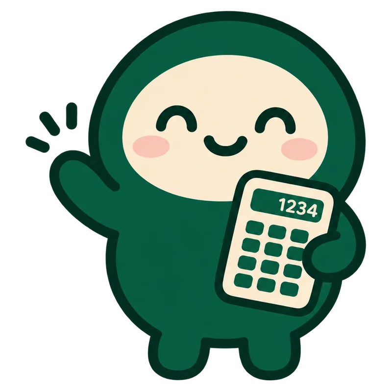
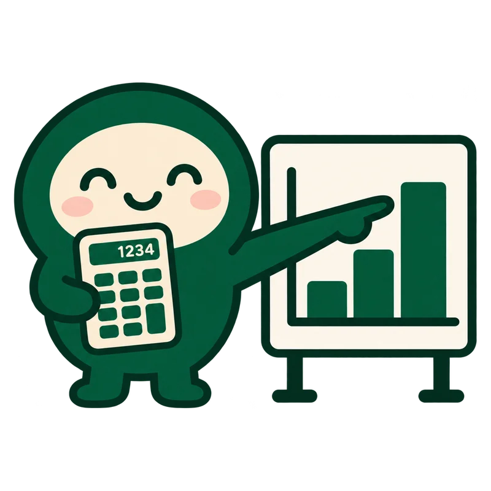
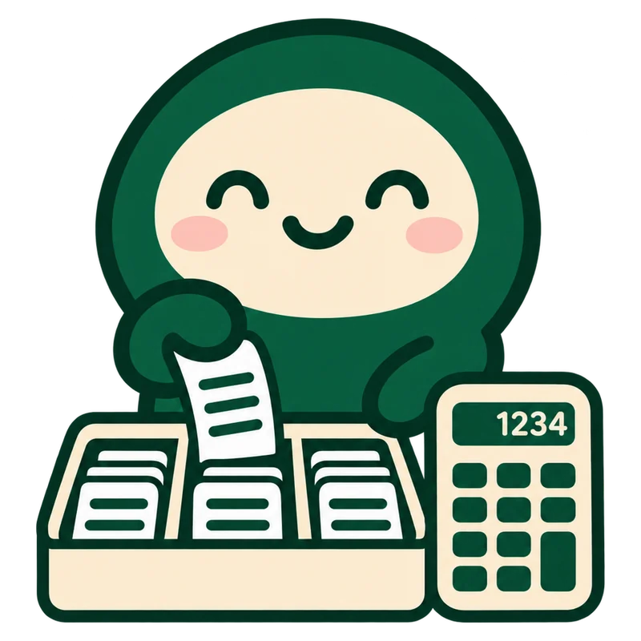

01
AIアシスタント導入支援
Muse などのAIアシスタントを導入し、仕事ごとに部屋（プロジェクト）を分ける設計まで一緒に行います。最初に「AIに渡してよい情報・渡さない情報」の線引きを決めるので、安心して使い始められます。

仕事のたびに作る請求書が、チャットやメールの中に散らばっている。収入は給料、副業、プラットフォームからバラバラに入ってくる。だから「いくら稼いで、いくら使っているか」が、いつも分からない。
このサービスは、AIアシスタントの導入から、過去の請求書の台帳化、毎月の収支が見える表づくり、確定申告の準備までを一緒に進める、セットアップ支援です。仕組みができれば、あとは月に一度眺めるだけになります。


Muse などのAIアシスタントを導入し、仕事ごとに部屋（プロジェクト）を分ける設計まで一緒に行います。最初に「AIに渡してよい情報・渡さない情報」の線引きを決めるので、安心して使い始められます。
チャットやメールに散らばった過去の請求書を全部回収し、ファイル名を揃えて1か所に集約。日付・仕事先・金額・入金済みかどうかを1行ずつ書く「請求書台帳」を作ります。今後は「作ったら台帳に1行」のルールで、二度と散らばりません。
給料・副収入・支出を月ごとに並べた表を作り、「今月いくら残ったか」が一目で分かる状態にします。見込み収入も並ぶので、貯金や大きな買い物の計画が立てられます。
| 月 | 給料 | 副収入 | 収入合計 | 支出 | 残り |
|---|---|---|---|---|---|
| 1月 | — | — | — | — | — |
| 2月 | — | — | — | — | — |
副収入の年間合計を出し、「申告が必要かどうか」の目安を確認します。レシートや証憑の整理、プラットフォームごとの売上集計など、申告書づくりに進める状態まで伴走します。
いま請求書がどこにあり、収入がどこから入っているかを一緒に棚卸しします。「どこにあるか分からない」状態からの相談で大丈夫です。
AIアシスタントを導入し、プロジェクト分けの設計と、渡す情報の範囲（金額だけ／明細まで／パスワード類は渡さない）を決めます。
散らばった請求書を集めて台帳に寄せ、今年の副収入の合計を出します。ここで全体像が初めて見えます。
「請求書を作ったら台帳に1行」「月に一度、収支ビューを眺める」の2つの習慣だけが残ります。
証憑と集計が揃った状態で申告期を迎えます。必要に応じて、税理士に渡せる形への整理もお手伝いします。

提供者自身の確定申告のために作った仕組みです。レシートをスマホで撮るとAIが内容を読み取って分類し、会計ソフト（freee／マネーフォワード）へ取り込める形式で書き出します。自分の申告準備で実際に使い続けている道具を、考え方ごとお渡しします。
提供者はツアーガイド、語学レッスン、業務委託など複数の収入源を持ち、請求はすべて1つの台帳で管理しています。未請求や期限を過ぎた請求がないか、毎週チェックする仕組みまで含めて運用中です。この台帳運用の型が、そのままサービスの土台になっています。
大丈夫です。スマホ中心でも始められます。導入は画面を見ながら一緒に進め、「次に何をすればいいか」が分かる状態までをゴールにします。
最初のステップで「渡してよい情報・渡さない情報」の線引きを一緒に決めます。金額だけから始める方法もあります。銀行やカードのパスワード、ログイン情報は、AIにも誰にも渡さないのが鉄則です。
このサービスは税理士業務ではありません。申告書の作成や提出の代行は行いません。日々の記録と証憑を整え、「自分で申告に進める状態」「税理士にそのまま渡せる状態」を作るための仕組みづくりです。
現状の散らかり具合と、どこまで伴走するかで変わるため、ヒアリングのうえ個別にご案内します。まずは相談からお気軽にどうぞ。
オンライン（ビデオ通話）での実施が中心です。東京近郊の方は、対面での実施もご相談いただけます。
請求書がどこにあるか分からない、収入の合計が出せない。その状態のまま相談に来てください。棚卸しから一緒に始めます。
相談フォームの公開まで、今しばらくお待ちください。公開次第、このページからお申し込みいただけるようになります。